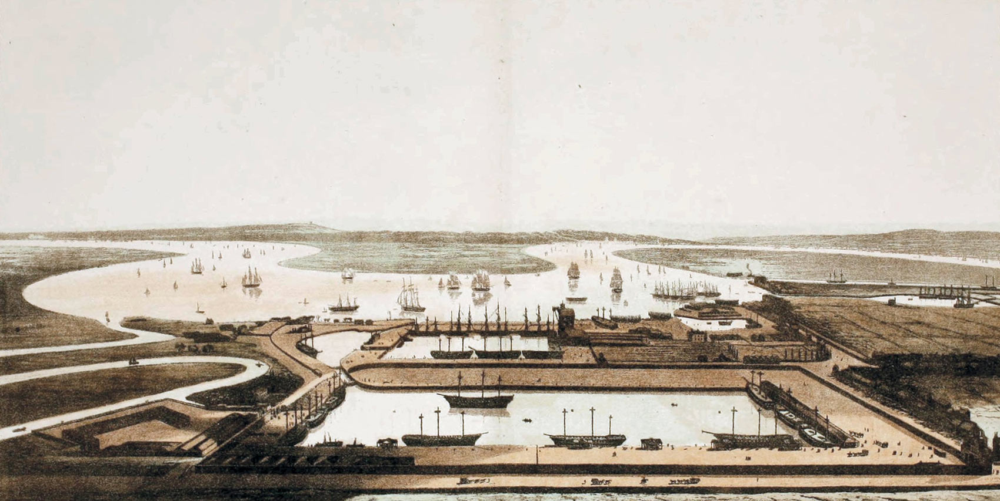

Is London a monsoonal city?
The fate of tropical humanity … was cast when its labour and products were being dynamically conscripted into a London-centered world economy.¹
East India Dock looking towards the River Thames, 1806, William Daniell. In Robert Wigram and Henry Green, Chronicles of Blackwall Yard, 1881, https://archive.org/details/ chroniclesofblac00gree.
Researching the monsoon
from London
London is the city from where colonial authority and racialised discourse were projected across monsoonal life-worlds; where colonial science developed empirics that cast monsoonal temporalities as risk and radically reorganised monsoonal territories for profit; where the legacies of colonialism are still palpable – in the India Office Records in the British Library, in the edifices of empire on Exhibition Road, in the Maritime Museum in Greenwich and the Palm House in Kew Gardens, in the city’s cuisine, in the clothes that we wear, in financialised commodity markets, in the rise of India’s elites to positions of power in British politics, in the impoverished South Asian communities living across London’s boroughs. And, not to forget, Brexit too is a monsoonal affair. What does it mean to research the monsoon from the nerve centre of this ongoing, racialised, colonial project?
Monsoonal Multiplicities artists
residency
In order to deepen understandings of London’s monsoonal complicities, and with them our own, artists Feedback Theatre, Sheila Ghelani and Naiza Kahn and will take up residence in the Monsoonal Multiplicities virtual exhibition for the month of March 2021 and apply their research practices to the question ‘How is London a Monsoonal City’? Film maker Hydar Dewachi will document the process and produce four short videos to premier on March 29, 2021. Each artist will also produce a minimum five Instagram posts that will feature on the Monsoon Assemblages instagram feed in April 2021. The public are invited to engage with the artists on two occasions:
How is London a Monsoonal City?
Online openhouse artists residency workshop
March 18, 13.00–15.00 UTC (09.00–11.00 EST, 18.30–20.30 IST)
Booking: Eventbright
Hydar Dewachi
Naiza Khan
Sheila Ghelani
Feedback Theatre
Chair: Corinna Dean
An online openhouse workshop when artists
participating in the Monsoonal Multiplicities artists
residency will discuss their work and open it for
discussion with each other and members of the
audience
Monsoonal Multiplicities Online Exhibition Closure
Online event
March 29 13.00–15.00 UTC +1 (08.00–09.00 EST, 18.30–20.30 IST)
Booking: Eventbright
Speaker: Harry Charrington
Chair: Lindsay Bremner
This event will end the live period of the Monsoonal Multiplicities online exhibition. It will premier a video of the Monsoonal Multiplicities artist residency and launch an Instagram series of the work the artists produced. The Head of the School of Architecture and Cities at the University of Westminster will close the event with remarks about the potential impact of the Monsoon Assemblages project on architectural teaching and practice.
Participating Artists
Hydar Dewachi
Hydar is an Iranian/English filmmaker, designer and IT engineer whose practice fuses images, design and technology often in documentary, semiautobiographical contexts. He has worked across a diverse spectrum of sectors, including the creative industries, charities, education, and arts and performance
Image: Hydar Dewachi behind the camera filming ‘One Morning in May,’ 2012, performance by Noëmi Lakmaier. Photo: Cat Harrison.
Feedback Theatre
Feedback Theatre is an all women, process-led collective of theatre, movement and research artists dedicated to socially engaged creative practice. Their work has included ‘No Feedback’, an immersive theatrical event that combined human rights research and physical theatre to engage audiences in questions of discrimination and genocide. Feedback Theatre artists Nina Feldman, Debora Minà and Mita Pujara will participate in the residency.
Image: Feedback Theatre, ‘No Feedback Show,’ 2015
Sheila Ghelani
Sheila is an artist of Indian/English mixed heritage, whose solo and collaborative performances, social art works, installations, texts and videos seek to illuminate and make visible the connections between race, ecology, science, history and the present day.
Image: ‘Sulphur,’ 2017. Photo: John Hunter.
Naiza Khan
Naiza is a multi-media English/Pakistani artist. Trained as a painted and printmaker, she is also known for sculptures and installations that explore the female body and broader themes of place, identity, militarism and violence. In 2019 she was the first artist to represent Pakistan at the Venice Biennale.
Image: Naiza Khan, ‘Map-under-construction,’ 2019, brass, approx. 100 x 80 cm.
1Mike Davis, Late Victoria Holocausts: El Niño Famines and the Making of the Third World, London, Verso, 2001, p. 9.
Text by Lindsay Bremner.
Design by Jonathan Cane.